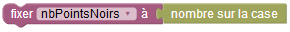
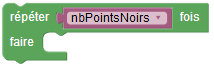

Peindre le motif - sujet 4


Programmez le robot afin qu'il peigne toute les cases marquées avec un point noir.
Le nombre devant le robot indique combien de cases sont marquées, un peu plus loin. Il doit donc lire ce nombre, le stocker dans sa mémoire grâce à une variable, puis utiliser le contenu de cette variable dans le programme.
Indication : pour lire le nombre et stocker sa valeur dans la variable memoireRobot, avancez sur sa case, puis exécutez l'instruction suivante :
Vous pouvez ensuite utiliser cette variable là où vous avez besoin de sa valeur, par exemple :
Devant le robot se trouvent deux nombres : le nombre de lignes et le nombre de colonnes du rectangle de cases marquées.
Devant le robot se trouve un nombre : le nombre de lignes et de colonnes occupées par le triangle de cases marquées.
Notez que votre robot ne peut pas se déplacer vers le haut.
Dans cette version, les blocs sont regroupés par catégorie dans des menus. Cliquez sur un menu pour accéder aux blocs de la catégorie correspondante.
ATTENTION, le même programme doit fonctionner sur les deux tests. Regardez-les avant de programmer !